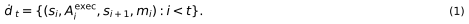
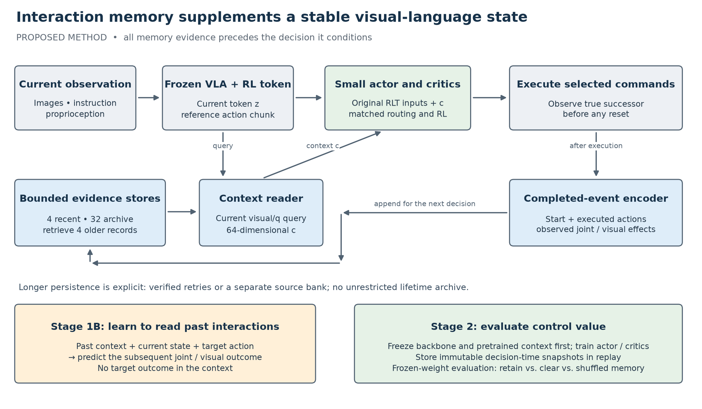
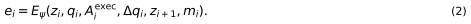
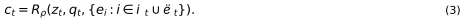
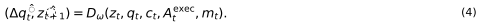
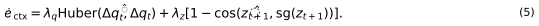
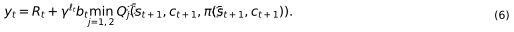
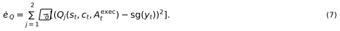
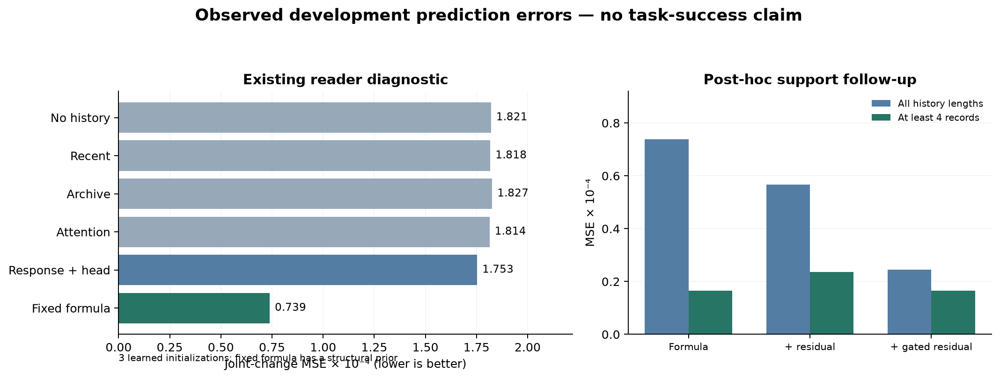

Research manuscript, 3 October 2026. Proposed method and evaluation protocol; the reported pilot measurements concern the existing development branch, not a completed evaluation of the proposed method. Author information is intentionally omitted. This is an extended working draft, not a submission-formatted or experimentally complete paper.
Lightweight reinforcement learning can adapt a frozen vision-language-action model through a compact state representation and a small actor–critic. However, a current observation need not reveal how the robot responds to commands under its present execution conditions. We study whether completed interactions can supply this missing information. We propose a bounded interaction memory whose encoder and reader are trained to predict the consequences of subsequent actions from strictly preceding experience. The resulting context supplements the original RL token and conditions a small actor and critic, while the visual-language-action backbone remains frozen during online learning. Recent ordered records capture immediate execution history; a bounded archive supports retrieval across verified retries and, in a separate protocol, transfer from source interactions. The design separates adaptation through memory updates from learning through parameter updates. Existing simulation diagnostics show that command–response history contains predictive information, but also expose a weakness: a fixed response estimator substantially outperforms the current attention reader. These observations motivate consequence-supervised memory training without establishing a control benefit. We specify controlled experiments for online sample efficiency, frozen-parameter adaptation, stale-memory effects, visual relevance, and transfer. Closed-loop improvements and reduced human effort remain hypotheses to be tested.
This work investigates how a robot can use completed physical interactions to improve lightweight reinforcement learning around a frozen vision-language-action (VLA) model. A pretrained VLA supplies useful task and visual information, but two observations with similar appearance and joint configuration can precede different responses to the same command. A robot may encounter a different controller gain, delayed execution, an object that slips, or contact that blocks motion. Some of these differences become observable only after acting. The relevant question is whether the agent can retain that evidence and use it when choosing its next action.
RLT provides a suitable experimental starting point: a compact token connects a VLA to lightweight online actor–critic learning (Xu et al. 2026). Its computational advantage makes controlled experiments feasible on modest hardware. Our local RLT implementation also exposes a reference action chunk and proprioception to the small controller. We preserve these inputs. We investigate an additional source of information: what actually happened when commands were executed. The objective is not to replace the visual token or fine-tune a large backbone online.
There are two distinct ways that experience can affect behavior. Replay-based reinforcement learning changes network parameters using past transitions. A context memory changes the information available to a decision, even when parameters remain fixed. These mechanisms need separate evaluation. Ordinary RL already uses unsuccessful transitions through reward and value learning; storing a failure is not a new algorithmic contribution. A memory mechanism is useful only if its contents change predictions or decisions in a beneficial and reproducible way.
Our proposal is inspired by Zeva’s use of completed interactions and deployment-time memory (Chen et al. 2026). We ask a narrower, testable question: Can a representation learned to extract future-useful execution evidence improve an RLT controller under a fixed interaction and compute budget? “Future-useful” has an operational definition. The memory encoder must help predict the effect of a later action from earlier records; reconstructing the effect already stored in the same record is insufficient evidence. This training criterion gives the memory a role beyond generic attention over a trajectory.
The proposed contribution is a method and an evaluation of consequence-supervised context for frozen-VLA RL. A prediction loss plus concatenated memory is not sufficient novelty by itself; this draft does not establish that the proposed combination clears that bar. Its intended empirical contributions are (i) improved online learning at matched data cost, (ii) useful adaptation from retained evidence with parameters frozen, and (iii) selective reuse of source experience without systematic negative transfer. None is asserted as an established result in this draft. Context inference, response prediction, memory conditioning, and residual-based reliability have substantial precedents. The scientific contribution must therefore be demonstrated by the controlled combination, its failure analysis, and its benefits over strong history and representation baselines. If the result reduces to a standard Zeva-style encoder attached to RLT without an additional empirical finding, substantial novelty remains unresolved.
VLA models such as pi0 and pi0.5 combine pretrained visual-language representations with action generation (Black et al. 2024; Intelligence et al. 2025). RLT studies compact representations for lightweight online RL (Xu et al. 2026). DSRL instead learns to steer a frozen diffusion policy through its sampling variables (Wagenmaker et al. 2025). ConRFT studies offline and online reinforced VLA fine-tuning using a consistency policy (Chen et al. 2025). These approaches differ in which parameters and action interfaces are optimized; published success numbers cannot be compared directly across their training data and control budgets.
The recently released eRLT is a particularly close representation baseline. It selects action-relevant information across tokens and layers of a frozen VLA, initializes routing with expert-action prediction, and adapts routing through the critic (Huang et al. 2026). Our proposed information source is completed execution history. Current-observation routing and history-based condition inference are complementary hypotheses, but a stronger current-state representation could eliminate an apparent memory advantage. Accordingly, an eRLT-style representation comparison is required before claiming that memory addresses a limitation specific to frozen VLA features.
Zeva learns an interaction representation with action-conditioned pre-interaction and post-interaction effect prediction, then uses short-term and cross-attempt memory to condition action generation; its deployment procedure updates memory with neural parameters frozen (Chen et al. 2026). We borrow that interaction–storage–conditioning pattern. Our implementation conditions RLT’s small actor and critic and explicitly separates online weight learning from frozen-parameter memory adaptation. Effect prediction and dual-timescale memory are inherited ideas, not new contributions here. A simplified reader inside RLT must be labeled a Zeva-inspired adaptation rather than a reproduction of the complete system.
MemoryVLA retrieves perceptual and cognitive information to condition manipulation (Shi et al. 2025). RoboMME provides a benchmark for memory in robotic generalist policies (Dai et al. 2026). These works make a generic “adding memory improves manipulation” claim inadequate. Our evaluation isolates executed commands and responses, distinguishes visual context from joint history, and tests transfer and interference under changes in execution conditions.
The broader adaptation literature already formalizes history-conditioned control. UP-OSI predicts dynamics parameters from recent states and actions (Yu et al. 2017); RMA learns rapid adaptation from recent experience (Kumar et al. 2021). PEARL infers context for off-policy meta-RL, VariBAD conditions behavior on inferred task uncertainty, and RL2 learns an adaptation procedure through recurrent state (Rakelly et al. 2019; Zintgraf et al. 2019; Duan et al. 2016). We do not claim the first physical context representation. Our setting differs through frozen VLA features, bounded explicit evidence, action-chunk execution, and the need to measure benefits under a small online budget.
SPR learns representations using future latent prediction (Schwarzer et al. 2020). FLARE integrates future latent modeling with action generation (Zheng et al. 2025). Imagine-RL augments VLA reinforcement learning with a frozen world model and residual-confidence-guided critic fusion (Hu et al. 2026). TD-MPC2 uses learned latent dynamics for trajectory optimization (Hansen et al. 2023). We use prediction to train a representation of preceding interactions; the proposed actor does not query a predictor for each candidate action or perform model-based planning. A prediction-only sidecar is nevertheless a necessary control for separating memory from an auxiliary-loss benefit.
Off-policy actor–critic methods already learn from unfavorable transitions (Haarnoja et al. 2018; Fujimoto et al. 2018). Hindsight Experience Replay additionally changes the goal interpretation of failed attempts (Andrychowicz et al. 2017). HIL-SERL demonstrates a human-in-the-loop learning system where demonstrations and corrections matter (Luo et al. 2024). Our failed interactions contribute to dynamics supervision and value learning, but are not automatically behavior-cloned. Simulation correction counts are proxies; human minutes saved must eventually be measured on physical hardware.
Table 1. Closest conceptual comparisons. Entries describe the mechanisms relevant to this proposal, not exhaustive capabilities of each work.
| Work | Information central to the comparison | Learned or updated component relevant here | Required distinction |
|---|---|---|---|
| RLT | Current VLA representation | Compact representation, then small RL controller | Preserve baseline action and routing contract |
| eRLT | Tokens and layers of current VLA input | Action-initialized, critic-refined routing | Test whether better current features remove the gain |
| Zeva | Completed visual-action interactions | Interaction encoder; deployment memory | Separate context adaptation from RL weight updates |
| MemoryVLA | Retrieved perceptual/cognitive history | Memory-conditioned action model | Compare with generic visual history |
| RMA / UP-OSI | Recent state-action evidence | Adaptation or identification module | Include a strong recurrent history baseline |
| FLARE / SPR | Future representations | Predictive representation learning | Include prediction without an archive |
| Imagine-RL | Predicted futures and model residuals | World-model-augmented value estimation | Do not claim novelty for predictive critic confidence |
| Proposed method | Earlier execution records useful for later consequences | Stage 1B context encoder; Stage 2 actor–critic | Establish benefit through memory interventions |
We consider partially observed manipulation with visual observations,
instructions, and proprioception. Let the hidden physical state be
x_t, and let theta_t summarize execution
conditions such as controller settings, friction, or delay. The
transition law depends on both. theta_t is a modeling
device; its true value is not provided to the proposed controller and
need not be identifiable. We initially study stationary conditions
within an attempt and subsequently introduce controlled changes.
The frozen Stage 1 model produces an RL token z_t,
transformed proprioception p_t, and a reference action
chunk A_ref,t. Raw joint positions q_t are
separately available to the interaction collector. Their units differ
from the transformed VLA state. We denote the deployable current input
by s_t = [z_t, p_t, q_t]; the no-memory reference receives
the same current observations wherever a comparison requires input
matching. Any baseline that gains a new raw-state input is separately
named.
At decision time, the controller proposes a chunk of at most
H = 10 normalized commands. Existing routing selects the
executed commands, which may originate from the VLA, actor, or an
explicitly enabled corrective controller. We store the actual executed
prefix of length ell_t, not an unselected proposal. The
available history contains only completed records:

The mask m_i identifies valid commands, terminal
observations, and stream boundaries. The memory context c_t
is a deterministic function of a bounded subset of this history and the
current observation. It is an inferred condition, not a calibrated
posterior over physical parameters. We optimize expected discounted task
return while tracking interaction count, online compute, total
pretraining cost, and memory overhead.
A physical interaction representation is defined operationally: it summarizes how commands and observed outcomes relate in a way that improves held-out consequence prediction or control. This does not imply discovery of a unique friction coefficient, contact force, or universal physical law. Small joint motion can result from obstruction, controller gain, saturation, or latency. Claims of contact recognition require independent contact measurements; claims of causal identification require stronger assumptions or interventions than sequence prediction alone.

For each completed chunk, the collector constructs a record containing the raw start state, executed commands, valid duration, and observed effects. The current branch already stores raw joint positions and their changes. We propose adding current and successor visual tokens to distinguish interactions that have similar joint configurations but different object arrangements:

E_psi is a small event encoder with a 64-dimensional
output. A two-layer temporal attention block encodes the ordered
commands and their masks; an MLP projects the remaining inputs. This
preserves action order, which a sum-of-commands response formula
discards. Initial widths are 128 hidden units and four attention heads;
these are starting configurations rather than established optimal
hyperparameters. Train-only normalization is stored with the encoder
version. No additional VLA forward pass is required if tokens are
already computed for current and true successor observations.
A record may contain its own observed effect because it is written after that effect occurs. It may not contain the effect of the action currently being selected. Termination flags are needed for transport and validity, but the default learned physics input excludes success and task reward. Reward remains in replay for value learning. An ablation includes end flags to test shortcut learning. Invalid padded values must be removed before an MLP, normalization, attention, or nonlinear loss; multiplying a NaN-containing scalar by zero is insufficient.
The short store contains the latest four valid records in chronological order. The archive contains up to 32 completed records, including records that may also be recent; the reader selects up to four older candidates after excluding the short store. We retain individual records instead of averaging contradictory outcomes. The first implementation uses a bounded FIFO archive to isolate representation learning from a sophisticated storage policy. “Long-term” here means older than the immediate context window; persistence across attempts is an explicit protocol, not the default meaning of the word.
A query from current visual and proprioceptive inputs attends to the recent records and selected older records:

For an implementable first learned retrieval scheme, use normalized current/start visual projections and scaled joint distances to select archive candidates. Train the visual projection jointly with the context loss using soft attention over the full 32-record archive in Stage 1B; apply top-four selection and fine-tune with the deployment selection rule before freezing. Report the soft-to-hard gap. A simpler fixed visual-plus-joint distance reader is the first fallback and a baseline. The reader receives temporal age and source-domain tags that are observable at deployment, never hidden stiffness or target-test task labels. Action and effect content are encoded in values; retrieval is based on available current context.
Empty memory maps to exactly zero. A fixed, validation-selected context-dropout rate during training exposes the controller to empty memory, reducing a train/test mismatch in clearing interventions. Report both natural-retention performance and intervention sensitivity. A short-only version retains the same output dimension. Cross-attempt retention requires a verified reset instance and unchanged physical configuration in the retry experiment. Cross-task transfer uses a separate source bank with declared provenance, compatible robot/controller units, and an encoder version. The source bank is read-only during held-out target evaluation; target evidence lives in a separate temporary bank and is discarded between instances.
Stage 1B trains the event encoder and reader on a fixed transition dataset after the original Stage 1 checkpoint has been selected. It reconstructs the history available immediately before each target action. The decoder sees the current observation, this past context, and the target action sequence. It predicts the target action’s subsequent effect:

The initial predictive dataset uses fixed-horizon windows with valid successors and reports any terminal-window exclusions. Outcome-dependent termination length and success flags are not prediction inputs. Online residual checks commit to a horizon before execution and bind feedback to that prediction. All context records in Equation (4) precede the target chunk. The target outcome is excluded from context construction, key selection, normalization fitting, and memory summaries. Windows from one underlying trajectory or paired scene/command seed stay in the same dataset split. The action input is available to this training objective but the prediction head is not required for action selection.
We supervise raw joint changes in normalized coordinates and a fixed visual target. Direct prediction is the initial visual head: a separate development branch found that residual latent prediction was not uniformly better at long horizons. We retain both as an ablation rather than imposing a residual parameterization:

Start with lambda_q = 1 after train-split
standardization and choose lambda_z from
{0, 0.1, 1} using validation episodes only. The frozen
token target prevents target drift. The loss does not ensure memory use:
the decoder might solve the problem from the current input alone. We
therefore require no-history, shuffled-history, command-shuffled, and
mismatched-context comparisons on the same held-out groups. Those
interventions diagnose dependence; they do not establish physical
identifiability.
Demonstrations often cover successful execution but few blocked or delayed responses. Stage 1B therefore uses a shared, explicitly costed pool of demonstrations and bounded exploratory interactions, including failures. Every comparison receives the same source trajectories; prediction-free baselines may use them for their permitted RL warm start. We report both online-only sample efficiency and total-data efficiency. A benefit purchased with additional private pretraining data is not an equal-data gain.
An optional contact head can predict a simulator contact label from deployable inputs during training. This is privileged supervision and must be labeled accordingly, counted in the comparison, and ablated. The core proposal uses visual and joint effects alone. Desired task contact is not universally penalized; a contact-count reduction is meaningful only alongside success and a task-specific definition of undesirable impact.
The first proposed Stage 2 freezes the VLA, original token encoder, and pretrained event encoder/reader. It trains only the small actor and twin critics. This departs deliberately from the current branch, whose reader learns through TD loss. Freezing makes the context coordinates and transferred bank stable while testing whether the representation contains useful information. A later ablation jointly updates the context modules with TD and the auxiliary loss; it must re-encode raw replay snapshots and version any cached memory keys.
The actor input is [A_ref,t, z_t, p_t, c_t]; the critic
input is [z_t, p_t, c_t, A_t]. If raw q_t is
also exposed directly, the capacity-matched baseline receives it too.
The original routing, action bounds, reward, demonstration sampling,
exploration, and update ratio remain fixed within each comparison. The
memory reader never owns a second optimizer through the actor path.
With R_t the discounted reward inside a chunk and
b_t the baseline bootstrap-validity mask, the intended
semi-Markov target is

The baseline implementation’s fixed reward horizon and termination/truncation handling must be preserved or corrected uniformly across all methods before comparison; using one discount factor per ten-step chunk changes the algorithm. For transitions that terminate early, target construction must respect the actual valid execution and the environment’s terminal-successor contract.

The actor keeps the baseline value objective plus behavior-cloning terms on reference or correction targets. Failed executed actions are useful for Equation (7) and the consequence loss, but do not become positive imitation targets merely because they are stored. Entropy and action-noise settings remain those of the matched baseline; this draft does not introduce a new RL optimizer.
Replay stores owned copies of the context evidence visible at both
current and real successor decisions. Recomputing an old transition
against today’s archive would leak future information. The event from
the current action enters c_next only after its true
successor is observed. It never enters c_t. Partial resets
affect only their simulator lanes. A process restart does not silently
imply that the environment archive has been restored.
The core method uses a fixed memory policy. A separate robustness variant uses observed prediction errors to downweight or reset older evidence after a validated change signal. Its threshold is selected on validation streams, with a stationary-condition false-alarm constraint. Excitation support is not predictive confidence: abundant old evidence can be wrong after a condition change. Delayed feedback is matched to the prediction and memory generation that produced it; feedback from before a reset cannot repeatedly reset the new generation. This variant is evaluated in actual changed-condition simulation, not only synthetic scalar response streams. It is not presented as a new principle of confidence estimation.
Algorithm 1. One online interaction cycle.
c_t.The action expert may expose execution-relevant internal information, but it introduces a second representation intervention. During local Stage 1 training, its hidden states depend on noisy ground-truth action inputs and flow time. Those states are not automatically available under the same distribution at deployment. A valid experiment must specify a reproducible inference-time extraction rule, such as a fixed denoising time and fixed noise convention applied to a reference action proposal, and measure its extra latency. We defer this extension until history conditioning demonstrates a benefit. Joint Stage 1 training can subsequently add the consequence objective while preserving token reconstruction and action losses; it must use actual successor-aligned trajectories, not independent observation-action examples with invented next states.
The main hypothesis is that completed interaction evidence improves normalized success-rate AUC over online environment transitions under matched source data and updates. Final success, successful episodes per wall-clock hour, and total collection cost are co-reported. A lower prediction error is a diagnostic outcome, not the primary control result. Four additional questions test mechanism: does retaining memory help with weights frozen; does visual context improve over joint-only history; can outdated records harm adaptation; and can a source bank help a new condition or task beyond transferred network weights?
Before confirmation experiments, freeze the task list, seeds, primary metric, evaluation states, update budget, checkpoint rule, and source data. Use the final-budget checkpoint for the primary result; any validation-selected checkpoint is a separate report. No checkpoint is selected from test success. An initially proposed non-inferiority margin is five percentage points of final success; it is only claimed when the lower confidence bound of the paired difference exceeds minus that margin.
We start with the locally integrated ManiSkill peg-insertion task (Tao et al. 2024). The existing wide geometry is an engineering starting point; narrower geometry is a held-out geometry condition, not an independent task family. Add a pushing/alignment task and an articulated manipulation task once their demonstrations, action controller, and visual Stage 1 checkpoint are validated. PushCube and TurnFaucet are candidates, not claims of already supported local configurations. A second benchmark such as LIBERO can test broader transfer later (Liu et al. 2023), but switching simulator and controller prematurely would confound the first result.
Training varies supported physical parameters within a declared range. Separate tests hold out (a) scene/command seeds, (b) physical parameter values, (c) combinations of known parameter values, (d) geometry or object instances, and (e) task identity. These are different generalization claims. Controller gain, execution delay, friction, and object mass are changed one at a time initially. A wrapper that clips commands is an execution perturbation, not a simulated friction change. Read back the effective controller/physics parameters after reset and verify that the intended intervention actually took effect.
At least one task should require visual disambiguation: comparable robot configurations and command histories with different object alignment or contact geometry. Joint-only baselines may perform well on controller-gain identification; that does not establish a visual reasoning contribution. If the visual event features are unnecessary throughout, the eventual paper should narrow its claims and reconsider its fit to a computer-vision venue.
Table 2. Main comparison plan. Original RLT remains a reference even if a wider no-memory controller is used for capacity control. All memory methods use the same source trajectories and online interaction budget.
| ID | Method | Context training | Primary purpose |
|---|---|---|---|
| B0 | Original local RLT | None | Preserve the starting baseline |
| B1 | Capacity-matched RLT, zero context | None | Separate input width and parameter capacity |
| B2 | Recent ordered visual/proprioceptive history | TD-only recurrent reader | Strong history and partial-observability control |
| B3 | Current short-plus-archive reader | TD-only | Measure the existing Zeva-inspired branch |
| B4 | Fixed response features, padded to 64 dimensions | Parameter-free reader | Test the strong diagnostic alternative in control |
| M | Proposed consequence-supervised memory | Stage 1B, then frozen in primary Stage 2 | Test future-useful history conditioning |
| N1 | eRLT-style current representation | Action initialization and TD adaptation | Nearest representation comparison |
| N2 | Prediction-only sidecar, no archive | Matched consequence supervision | Isolate the auxiliary-prediction effect |
| N3 | Zeva-style CTE feeding the same RLT controller | Pre/post effect objectives and matched history | Test against the closest interaction-encoding design |
N1 must either reproduce a released compatible implementation or be labeled an adaptation with architecture and cost differences. DSRL and full Zeva are useful external comparisons only if task, source data, backbone, and intervention budgets can be aligned. Otherwise, discuss them without placing incomparable paper numbers in a ranking table. At minimum, N1 or a clearly justified action-supervised current-token control is required before a broad representation claim. N3 is a targeted mechanism control: compare the same history/data budget and downstream controller, disclose omitted Zeva losses or retrieval components, and do not present an incomplete adaptation as a full reproduction.
Stage 1B cost is charged explicitly. Report both fixed online interaction and fixed end-to-end compute comparisons. Match update-to-data ratios, BC pretraining, replay capacities, number of environments, action frequency, chunk size, and evaluation overhead. Actor initialization shares common weights where tensor shapes permit; added inputs are identically initialized across capacity controls. If the existing RLT phase gate uses simulator state, disclose it and keep it identical. “No corrective expert” does not mean “no privileged routing information.” Always-on actor experiments form a separate controlled block.
Table 3. Mechanism tests, ordered by scientific priority.
| Intervention | What is kept fixed | What a negative result means |
|---|---|---|
| Remove history at train and test | Data, context width, decoder capacity | Current inputs may suffice |
| Remove commands from event; remove target action separately and jointly | All observation windows | Joint removal tests action dependence; separate removals locate its source |
| Shuffle history within matched strata | Marginal records, count, normalization | Reader may ignore event correspondence |
| Recent only versus recent plus archive | Context width and training | Archive may be unnecessary |
| No Stage 1B versus consequence supervision | Source data access and Stage 2 budget | Auxiliary training may not help control |
| Visual-plus-joint versus joint-only events | Current visual input, history budget | Visual memory contribution may be absent |
| Predict only joints versus joints plus visual effects | Module capacity | Visual target could be nuisance supervision |
| Direct versus residual future latent head | Data, loss scale, updates | Residual structure may be harmful |
| Actor-only versus critic-only versus both conditioning | Shared learned context | Locate where information helps |
| Frozen versus online-updated context modules | Initialization, source data | Quantify stability/adaptability tradeoff |
| Uniform/FIFO versus learned retrieval | Record budget and reader | Learned retrieval may not justify complexity |
| Retain/clear/shuffle at evaluation | Identical trained weights and initial states | Isolate benefit of the evidence itself |
Do not train a separate model on every optional combination before the core causal comparisons succeed. The archive, reliability variant, and action-expert extension enter sequentially. A negative ablation is not hidden by averaging it with easier tasks.
For retry adaptation, fix every network parameter and optimizer
state. Run five attempts for each held-out instance with identical reset
state and physical conditions. Compare retaining the archive, clearing
it, and supplying a count-matched shuffled archive. Continue the attempt
schedule after success, resetting the same instance, to avoid selecting
only hard survivors. Report unconditional success at each attempt,
success conditional on previous failure as a distinct quantity, and
cumulative success. Even an unchanged independent controller achieves
cumulative success 1 - (1 - p)^K; increasing cumulative
success alone does not establish learning.
For transfer, hold the target initialization and weights fixed while changing only the source bank. Compare empty bank, related source interactions, unrelated but count-matched interactions, and a bank from a different physical condition. Separately compare pretrained versus untrained context weights without a source bank. This separates knowledge stored in parameters from knowledge stored in records. Target-test trajectories never enter the source bank or hyperparameter selection. Cross-task transfer first uses the same robot, action convention, and sensors; a new embodiment requires a separate alignment method and is outside the first claim.
Changed-condition tests retain an old bank deliberately, switch a verified physical parameter, and compare immediate clearing, no clearing, fixed forgetting, and residual-triggered downweighting. Report initial damage, recovery interactions, stationary false alarms, and recovery success. An oracle change indicator is only an upper bound. Successful adaptation should not depend on access to the hidden switch time.
The pilot uses three training seeds and small validation panels to find implementation errors. Confirmation should use five independent training seeds for the core baseline–method contrast when feasible, and at least three for secondary ablations. Report seed-level results, not only a pooled mean. Final evaluation uses at least 100 held-out episodes per seed and condition, increased if a non-inferiority or small-effect claim requires tighter precision. For intuition, a success probability near 0.5 has a roughly ten-point binomial 95% half-width with only 100 independent episodes; training variability adds uncertainty.
Use paired reset seeds and controlled action-noise streams where applicable. Bootstrap hierarchically over training seeds and evaluation instances; never treat adjacent trajectory windows or retries as independent training runs. Report uncertainty as recommended by the RL evaluation literature (Agarwal et al. 2021), while acknowledging that three seed clusters provide weak interval estimates. Predefine the main contrast and apply a stated multiplicity correction to families of confirmatory secondary tests.
Normalize learning-curve AUC by the fixed interaction budget so its scale remains success probability. Count valid environment control ticks as well as action chunks and optimizer steps. Threshold-hitting time is censored when a run never reaches the target; do not average only successful runs. Report simulator FPS, inference latency percentiles, end-to-end environment steps per second, successful episodes per hour, GPU-hours, peak memory, and archive/replay bytes. A faster success curve per transition can coexist with worse wall-clock performance.
Corrections, resets, and collision proxies are secondary simulation measurements with a fixed trigger and fixed corrective-controller budget across methods. Human correction time, setup time, and recovery time require real operator measurements and remain future work.
The following measurements were collected before the proposed method was implemented. They motivate its design and delimit current claims. They are not held-out confirmation results for the new representation.
The existing hidden-PD diagnostic contains 56 paired scene/command groups, each executed under stiffness 250 and 1000, for 112 trajectories of 120 control ticks. The 32/8/16 group train/validation/development-test split keeps each pair together. Both stiffness values occur in every split. Ten-step windows yield 768/192/384 examples, but these windows are correlated and are not independent environments. The learned probes use three initialization seeds and 1,000 updates, with checkpoint selection on validation groups.
Table 4. Observed development-test joint-change MSE. Lower is better. Means for learned methods; no uncertainty interval was reconstructed here. The fixed formula has structural knowledge and is not parameter matched.
| Existing reader/probe | MSE |
|---|---|
| No history | 1.8211e-4 |
| Recent history | 1.8176e-4 |
| Archive only | 1.8267e-4 |
| Full attention history | 1.8143e-4 |
| Response features plus learned prediction head | 1.7533e-4 |
| Fixed command–response formula | 7.3889e-5 |
The attention result is close to the no-history result, whereas a structured response estimator is substantially better. This supports the narrower inference that response-relevant information exists in these records and is poorly extracted by the current neural reader. It does not show improved task success or extrapolation to unseen stiffness. A fresh confirmation split is required because the development set has already influenced design decisions.
These legacy errors aggregate raw joint coordinates, including revolute arm joints and prismatic fingers; they should not be interpreted as a single physical unit such as squared radians. New experiments report arm and finger errors separately and provide train-normalized aggregate errors. The fixed estimator computes a per-joint command-to-change slope and an excitation support statistic. It sums normalized arm commands after applying the known controller scale; it does not estimate force or identify a unique physical cause. It also loses within-chunk action order and can be unreliable when opposing commands cancel.

A subsequent six-seed diagnostic adds learned corrections to the fixed response estimate. The support-gated version reduces the correction when past excitation is strong. This follow-up was selected after viewing earlier results on the same development data.
Table 5. Observed exploratory follow-up. Late history means at least four completed records.
| Diagnostic predictor | Overall MSE | Late-history MSE |
|---|---|---|
| Fixed formula | 7.3889e-5 | 1.6571e-5 |
| Formula plus learned residual | 5.6706e-5 | 2.3687e-5 |
| Formula plus support-gated residual | 2.4417e-5 | 1.6588e-5 |
The gate mainly prevents a learned correction from damaging an already useful mature-history estimate and improves cold-start behavior. Late-history performance is effectively at the fixed-formula level. This is not evidence that excitation support is calibrated uncertainty or that the online controller should trust all high-support records.
An existing overnight memory run reached 516 outer iterations before its 12-hour budget expired. Evaluation used four fixed trajectories: one checkpoint achieved two successes, while later checkpoints at iterations 400, 450, and 500 achieved one success each. The run used always-on actor control, whereas the formal baseline used a critical-phase routing configuration. There is no matched no-memory overnight run establishing attribution. These observations demonstrate that the training path executes; they do not demonstrate faster convergence or a reliable 25% final success estimate.
Synthetic condition-shift probes further show that stale high-support response estimates can be misleading and that delayed feedback requires generation bookkeeping. These are software and mechanism diagnostics, not manipulation experiments. None of the current evidence measures saved human time, source-to-target transfer, or sustained autonomous improvement.
Table 6. Formal results template. Every em dash denotes an unmeasured quantity. Populate separately for each task and condition; aggregate only after reporting per-task results.
| Method | Success AUC | Final success, 95% CI | Valid ticks to target | Successes/hour | Extra source GPU-hours |
|---|---|---|---|---|---|
| Original RLT | — | — | — | — | — |
| Capacity-matched RLT | — | — | — | — | — |
| Recurrent recent history | — | — | — | — | — |
| Current archive attention | — | — | — | — | — |
| Fixed response context | — | — | — | — | — |
| Proposed memory | — | — | — | — | — |
| eRLT-style representation | — | — | — | — | — |
A second table must report attempt-one through attempt-five success with frozen weights and retain/clear/shuffle interventions. A third must report related-bank, unrelated-bank, and empty-bank target performance. These tables cannot be inferred from prediction MSE.
Three patterns would support the central explanation: the representation predicts subsequent effects better with appropriate past interactions; controlled memory interventions change closed-loop performance; and the online learning advantage persists after charging pretraining and inference cost. Improvement on only one axis warrants a narrower conclusion. A better predictor with unchanged control value is a useful negative result, not evidence of sample-efficient RL.
If a strong recurrent reader matches the archive, retain the simpler method and drop claims about long-term retrieval. If fixed response features dominate, investigate neural estimation and observability before expanding the architecture. If source memory harms new tasks, report the negative transfer and restrict the bank’s scope. If eRLT removes the gap, the initial bottleneck may have been current-state representation quality rather than missing execution history. If gains occur only with privileged contact supervision, label the method accordingly and test robustness to noisy deployable sensors.
The principal limitations are partial observability, insufficient excitation, contact ambiguity, finite-memory interference, and mismatch between source and target controllers. Offline sequence prediction can exploit time or task correlations without identifying dynamics. Frozen visual targets may discard subtle contact effects, while changes in viewpoint may dominate their distance. A small number of simulation tasks does not establish universal physical knowledge. Persistent runtime memory and exact resumed environment state require additional systems work. Main results must specify which form of persistence was actually implemented.
For a computer-vision submission, visual evidence must contribute to the method and its evaluation. Merely appending a joint-response statistic to a VLA does not establish a new visual representation result. An honest paper can focus on interaction-conditioned visual control, but it needs task diversity, relevant visual ablations, strong nearest-neighbor baselines, and reproducible evidence. A simulation-only study is possible in principle; publication readiness depends on the strength of these results, not on the completeness of this narrative.
We propose to condition lightweight frozen-VLA reinforcement learning on representations of completed physical interactions, trained for their utility in predicting later action consequences. The design preserves a stable visual-language coordinate system, separates bounded context updates from parameter learning, and defines interventions that can test whether retained experience improves control. Existing diagnostics justify investigating the reader, but do not yet validate the proposed method. The next decisive experiment is a matched closed-loop comparison followed by frozen-parameter retain-versus-clear evaluation. If these succeed, the study can expand to source-bank transfer, changed contact conditions, joint Stage 1 training, and eventually measured operator effort on physical robots.
| Capability | Existing branch | Proposed work |
|---|---|---|
| Frozen Stage 2 VLA and original RL token | Implemented | Preserve |
| Raw executed command/joint-response record | Implemented, 110 dimensions | Preserve units and masks |
| Short store / archive | 4 recent, 32 stored, 4 retrieved | Add visual event content and learned retrieval study |
| Current memory reader | 64-dimensional attention or fixed response | Add consequence-supervised event encoder/reader |
| Reader update | Critic TD owns trainable reader | Freeze pretrained reader first; online update ablation later |
| Stage 1B interaction pretraining | Not implemented in Zeva branch | Add chronological transition dataset and auxiliary decoder |
| Same-instance retention | Optional, reset checks required | Complete frozen-weight evaluation tooling |
| Cross-task source bank | Not implemented | Separate provenance-controlled bank |
| Actual contact labels | Not in default event | Optional privileged auxiliary supervision |
| Context in action expert | Not implemented | Later extension with deployable feature contract |
| Production change detector | Not enabled | Optional robustness variant after core result |
The local inspected revision is
f2d1cf6486d309eb61785151bc33783bc64a967f. A newer remote
research revision,
abb4382362ae0c89f711009227cc236b6d6f8b4d, contains
delayed-feedback generation protection in diagnostics and has not been
merged into this working tree. Existing reports and raw result files are
indexed in the accompanying execution guide and evidence manifest.
For every experiment, save the git revision and dirty patch, resolved Hydra configuration, Stage 1 and context checkpoint hashes, normalization statistics, simulator/controller versions, train/validation/test identifiers, memory clear/retain policy, seeds, source-bank provenance, actual executed ticks, intervention settings, and hardware placement. Store evaluation per episode and per attempt. A resume check must exceed replay cache capacity and verify retained transition files, counts, optimizer/RNG state, and the declared environment-memory reset behavior.
Official RLinf was checked on 3 October 2026: main
c70606f08cdca259b8dec03d4430926b5b8fac9d; replay PR #1623
remained open. Upstream fixes are evaluated in a separate revision
before a campaign. A running campaign retains its fixed code version.
The document bundle contains source metadata and a snapshot of recently
updated official PRs.